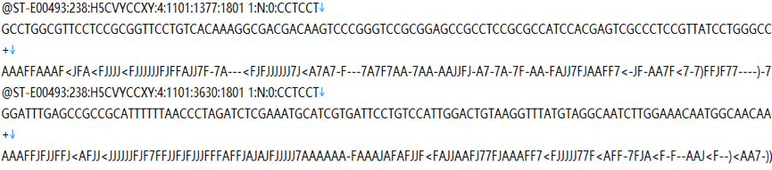

NGS（Next Generation Sequencing，二代高通量测序）技术应用高通量测序仪（如：illumina Hiseq 2000/2500、Miseq）对cDNA进行测序。首先得到的原始图像文件，然后经过碱基识别及误差过滤，最终得到可以用于分析的原始测序片段，我们称之为Reads，结果以fastq格式储存，它包括序列的碱基组成信息以及其对应的序列质量信息，双端测序(pair-end)会分为两个Reads文件：_1,_2两个文件。文件格式如下图3.1:
图3.1 Fastq文件示意图
第一行：reads名称，通常以@开头，随后为Illumina测序标识别符和描述信息；
第二行：碱基序列；
第三行：以+开头，存储与第一行相同的信息或为缺省值；
第四行：碱基的测序质量值，该行字符为第二行对应碱基的质量值加上33后转换为ASCII码，逆向转化即可直观得到每个碱基的质量信息。